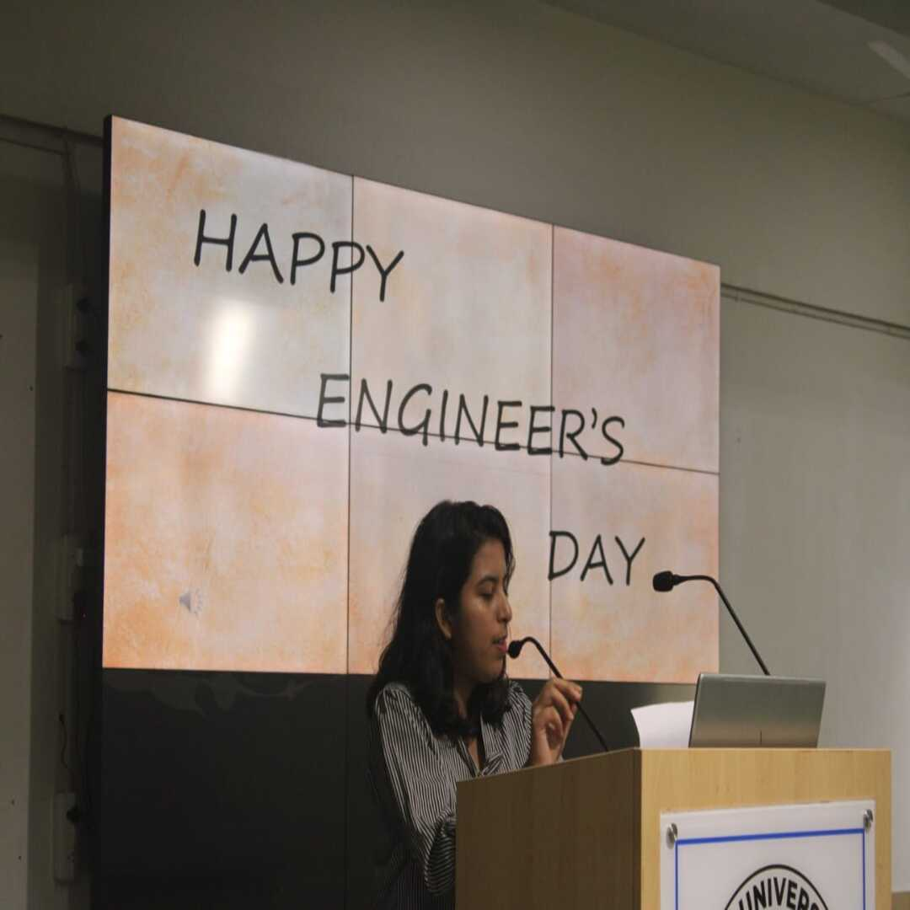
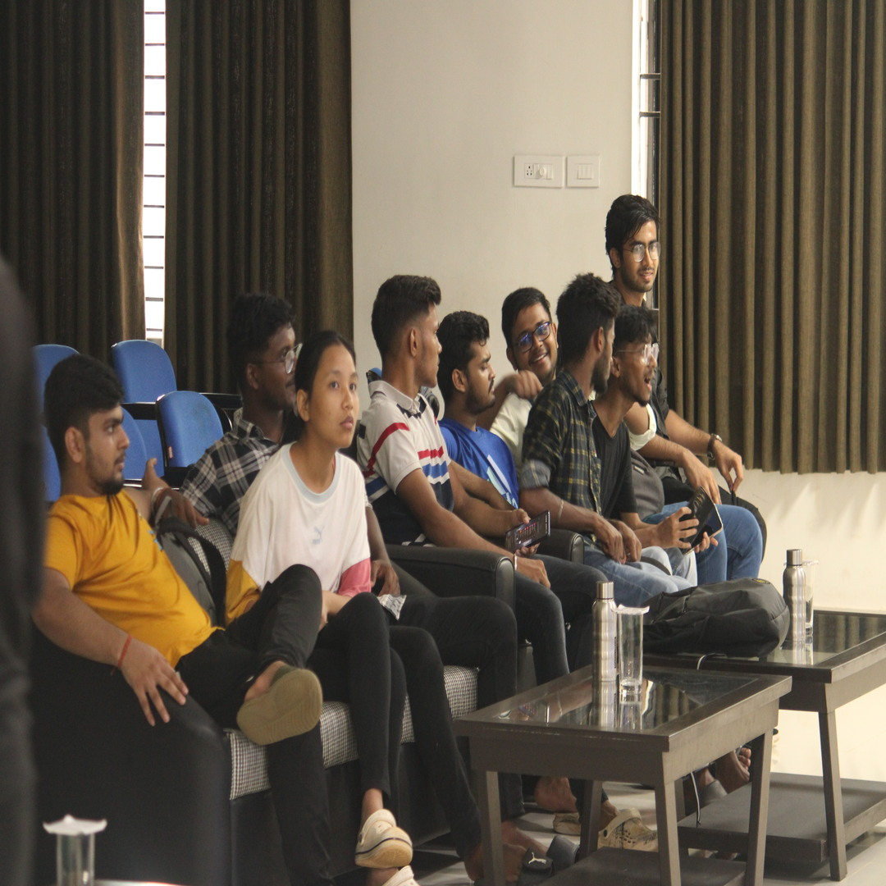
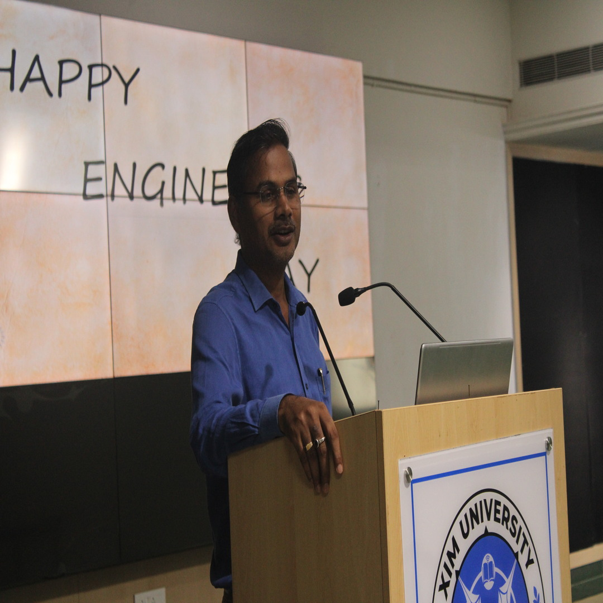
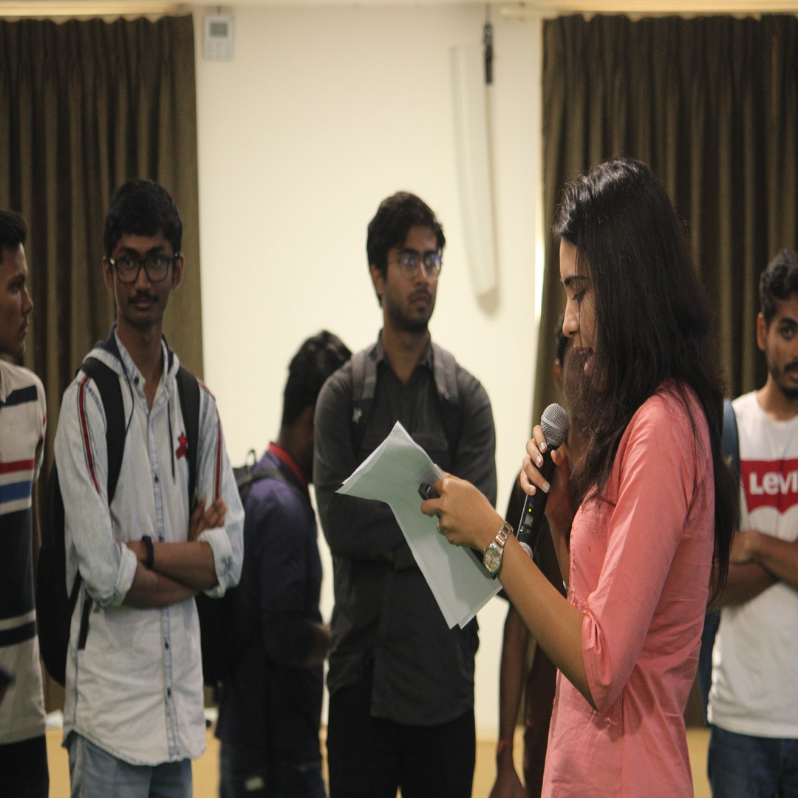
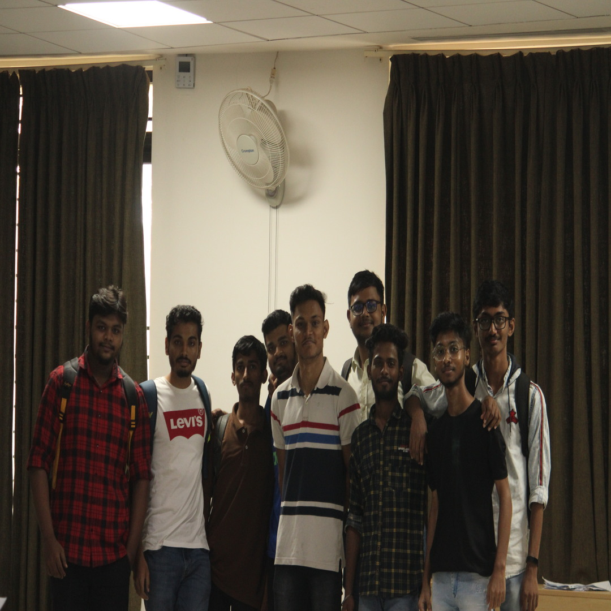
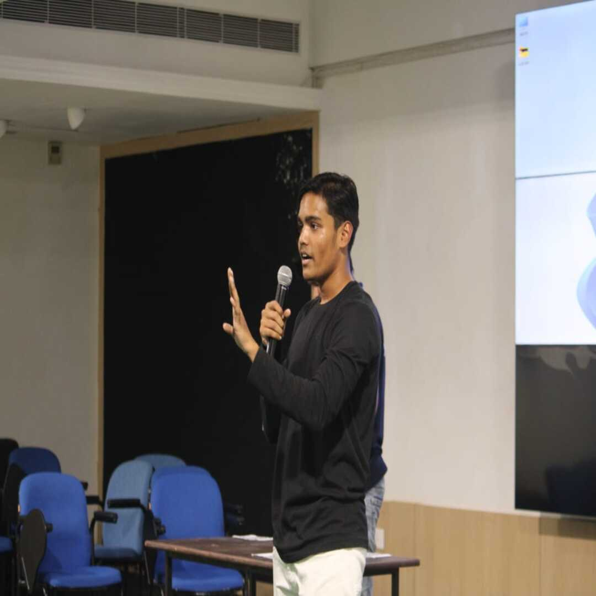

ENGINEER'S DAY 2023
Engineer's Day celebrations at the School of Computer Science and Engineering (SCSE) provided students with an
opportunity to showcase their passion for their upcoming profession and celebrate the spirit of engineering.
The event reflected the respect and dedication which the students have for their professional career.
The following are a few highlights of the event:
- Committee Formation: A dedicated organizing committee consisting of students from various years was formed to plan and execute the Engineer's Day
celebration. The committee comprised individuals with diverse skills and interests, ensuring a well-rounded approach to the event planning.
- Theme Selection: The committee brainstormed and selected a theme that resonated with the essence of engineering and innovation. The chosen theme aimed
to inspire creativity, problem-solving, and collaboration among the students, reflecting their dedication to the field of engineering.
- Cultural and Recreational Activities: Cultural and recreational activities such as music performances, dance shows, treasure hunt
and skits were organized to promote a sense of camaraderie and celebration among students. These activities provided a well-rounded
experience, balancing academic pursuits with leisure and entertainment.
Engineer's Day celebration was a testament of the students to their passion, enthusiasm, and commitment
to the field of engineering. The event provided a platform for students to showcase their skills, learn from industry experts, and connect
with like-minded individuals, fostering a vibrant and dynamic engineering community within the school.





